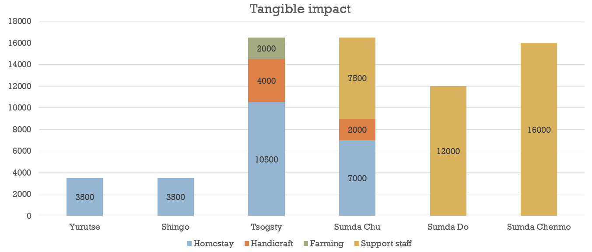
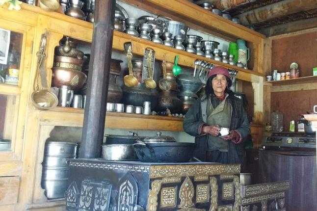

Mountain Homestays is an initiative by Global Himalayan Expedition to help preserve the cultural heritage and ensure sustainable
progress of marginalized mountainous communities living in the remotest parts of the world through livelihood
improvement and impact tourism. Mountain Homestay’s key focus is to provide income generation and livelihood
opportunities in the villages that have been solar electrified by Global Himalayan expedition team. The inflow
of income would help the villagers improve their standard of living and help them maintain the solar lighting
facilities installed in their village homes in a self-sustainable manner. The key focus areas are focused
on livelihood improvements through:
- Promotion of Solar based Homestays and their development
- Preserving ancient handicrafts and create market access for the same
- Improved processing of organic farm produce and better market access
- Engage impact tourists to preserve local art and culture
With two expeditions till now in 2016, we were still able to make significant impact on livelihood of these Ladakhi villages.

By promoting homestay based tourism and the local handicrafts from these solar electrified villages, the mountain home-stays
initiative has not only connected them with the rest of the world but has also enabled the women of these
villages to earn additional income and create a sustainable, scalable social enterprise. The access to energy
has played a crucial role in positively impacting the women of these communities who now not only maintain
these solar microgrids that provide electricity for their homestay but they also promote the lighting and
charging facility, as a feature of their homestay, to attract trekkers. An innovative approach which has
enabled these women to be actively involved in the economic activities of their households.

include "footer.html"
include "scripts.html"